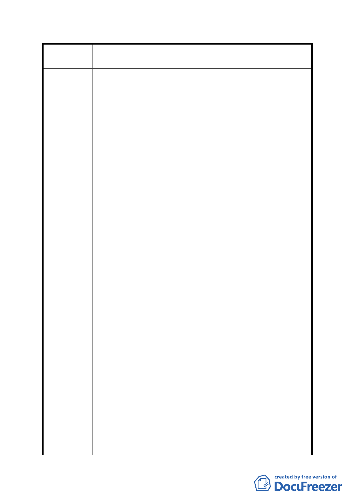

案
名
修訂臺北市「基隆河（中山橋至成美橋段）附近地區土地使
用分區與都市設計管制要點」（北段地區）計畫案
四、有關「（3）本計畫區商業區娛樂區之建築基地做附表1
指定使用項目之容積樓地板面積…」、「2、放寬規定」
及「（二）依本計劃及其他規定得增加容積者…」部分：
1、內湖科學園區及大彎南段緊鄰本區，且其地價遠低於本
區，當年幾乎以北段商用土地半價之分配比例領回工二
土地，台北市政府十餘年來卻大幅開放上揭地區之商業
使用致嚴重壓縮本區商業使用需求，是本區商業用地由
高強度之商業使用轉作低強度之住宅使用實為不得不
然。
2、地主於區段徵收領回土地時即因商業用地同時擁有高強
度使用及容積獎勵雙重誘因，始願以遠低於住宅用土地
之分配比例領回商用土地；高強度商業用途已因前述不
符市場需求，如再強加該修訂內容所載獎勵限制，對地
主豈非雙重懲罰？
3、一般地區商業用地如做低強度之住宅使用，仍得適用綜
合設計放寬獎勵，且無本修訂案商業用途須1/2以上之限
制。修訂案已有「至少一、二樓需作為原計畫商業使用」，
並有相關公共設施面積之規範，顯見修訂內容已維持商
業區及娛樂區主要軸帶商業活動內涵，並要求適度提供
因住宅使用衍生之必要公共設施，已兼顧都市發展、市
場開發效益及社會公平。因此實無商業用途須1/2以上限
制之必要。
4、本修訂案將容積移轉上限，由40％降為20％，於公告實
施前已申請容積移轉40％經都更處核准，而未申請建照
完成，於公告實施後是否仍保有該權益，並未說明。另
外，20％之規定低於台北市通盤性30％之規定，並不符
合公平正義原則。
五、有關「六、建築物高度：（二）…本計畫區各街廓之建
築物高度應依下表之規定。（三）樓層高度規定」部分：
本修訂案將高度上限由 30 米及 36 米放寬至 50 米，其
美意卻因為比照住一及住二高度比及深度比之限制變
的毫無意義。
六、有關「十六、開發許可」部分：
1、面臨計畫道路可獨立經營之店面及負責人辦公室均有獨
立設置廁所或茶水間之需求。
2、需考量夜間加班婦女，於使用集中留設廁所時之方便性
- 69 -